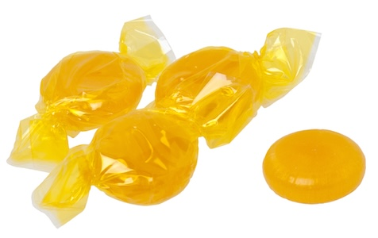

Butterscotch Candies

“Butterscotch hard candies” by Evan Amos, CC BY-SA 3.0
Your candies will look quite unlike these, however they'll taste even better. No
Creative Commons photo was available at time of writing and I haven't yet made the recipe myself...
Description
This recipe for a hard butterscotch candy is crunchy, yet creamy, and comes with a very short shopping list.
Beginner friendly and making approximately 64 candies, you'll have plenty to share, enjoying notes of
browned butter, sugar, and molasses. Before you begin to cook, make certain to have on hand a three quart
saucepan, silicon spatula, candy thermometer, 8" square cake pan, aluminum foil, cooling rack, cutting
board, and pizza wheel.
This recipe is based on Jennifer Field's delicious Butterscotch Hard Candy recipe.
Ingredients
Please note that all measurements for this recipe are by weight.
- 5 ounces unsalted butter
- 4 ounces granulated sugar
- 4 ounces packed, dark brown sugar
- 1 ounce light corn syrup
- 1/2 teaspoon kosher salt
- 4 ounces heavy cream at room temperature
Steps
- Butter the sides and bottom of your cake pan. Next, line it with foil, smoothing it
out against the pan as much as you can. Put the pan on a cooling rack near the stove.
- Divide the butter into small pieces and melt them in your saucepan over medium heat.
- Once the butter has fully melted, stir in the sugars, syrup, and kosher salt. Stir well with your
spatula until mixture comes to a boil, in order to avoid burning any impurities present in the molasses.
- Clip your candy thermometer onto the side of your pan. When the candy reaches 250°F, add the heavy
cream. The mixture may sputter, so add it slowly and stir steadily.
- Continue cooking the candy, stirring regularly until it reaches 295-297°F.
- Carefully pour the candy into the prepared pan. You can use your spatula to gently help the last bit of
the candy pour out, but don't scrape to clean the pot out.
- Allow the candy to cool for about 10 minutes, so it is pliable, but still holds its shape.
- Ease the foil containing the candy out of the pan and place it on a cutting board, foil and all.
- Lay the foil down along the sides of the candy and score the candy into 64 pieces in an 8 x 8 grid using
the pizza wheel, repeating as necessary. Try to make the score marks fairly deep, at least halfway
through the candy.
- Move the scored candy, still on its foil, back onto the cooling rack.
- Let the candy cool until completely firm, about an hour. After cooled, you may remove it from the
cooling rack, in order to dry for several hours or overnight. Once fully dried, break the candy into
pieces along the score lines. Butterscotch may be stored at room temperature in a sealed container for
up to a week.